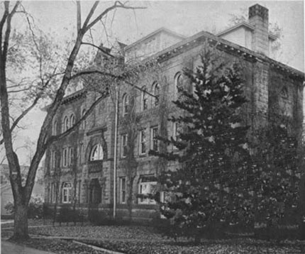
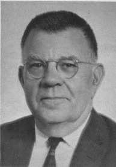

Frost, Luke (Dell): Flying Saucers Ufo Reports, p. 26, vol. 2, 1967
Research grant enrolls UFOs in college and lifts reliable sighters out of the "kook" class
|  |
In the past, anyone who reported a UFO ran the risk of being tagged a "kook." Today, with the recent launching of the government subsidized research center at the University of Colorado, such a report is considered a major scientific endeavor. But this transition from kook to contributor has not developed quickly or easily.
It has consumed almost 20 years and a total of approximately 11,000 reported sightings of UFOs. In addition, it has taken public interest and a clamor so noisy that it couldn't be ignored in the halls of Congress.
The UFO "problem" - or "question" - first was recognized officially in the late 1940s, almost two decades ago. At that time the U. S. Air Force, bending to public pressure, established what later became Project Blue Book at Wright-Patterson Air Force Base in Ohio.
For a branch of the American Armed Forces noted for its flamboyancy, the Air Force devoted precious little attention to the UFO investigation. The Project Blue Book staff at Wright-Patterson, for instance, consisted only of a major, a lieutenant and a secretary - none of whom had any particular interest or training in the UFO field.
Dr. Edward U. Condon, the distinguished scientist picked to head the new UFO investigation from Boulder, said of the Project Blue Book probe:
"For one reason or another, (it) was not in great depth." Hired early in the Project Blue Book study as scientific consultant and special UFO investigator for the Air Force, Dr. J. Allen Hynek, director of the Lindheimer Astronomical Research Center and chairman of the department of astronomy at Northwestern University at Evanston, Ill., became increasingly critical of the Project Blue Book operation.
UFO investigations by the Air Force, he said recently, were inadequate. And the whole project simply wasn't equal to the UFO problem.
|  |
Dr. Hynek, however, had something interesting to say about the approximate 11,000 UFO sightings reported to Project Blue Book. Most of the UFO sightings, he said, were understandable - "usual things seen under unusual or surprising circumstances." But about 5 per cent of the UFO sightings were "different."
These were the sightings that were neither understandable nor easily explainable.
It was this "different" 5 per cent - 1 of every 20 reported UFO sightings - that tantalized Americans. Complaints poured in, both from respected scientists and from persons who knew nothing about UFOs.
They wanted to know whether these objects scooting across the skies really were unexplainable, or whether the Air Force was keeping secrets.
By 1965, the Air Force director of information, Major General E. B. Lebailly, had a bellyful of UFOs. He asked for help.
Apparently for two reasons, he recommended that a private unit, divorced from the Air Force, be set up to investigate UFO sightings. The reasons:
-He wanted to eliminate criticism of the Air Force stemming from growing allegations that the service was hiding information about UFOs.
-He wanted to stop rumors that the Air Force was engaged in super-secret development of strange spaceships designed for air-to-air combat in outer space.
As General Lebailly was pressing for aid, there were other developments in Washington. Most spectacular of these was an open denouncement of the Air Force in the House of Representatives by Gerald Ford, Republican Congressman from Michigan.
Ford was joined in his Air Force denouncement by Democrats and fellow Republicans. The result was a hearing, in April of 1966, of the House of Representatives' Armed Services Committee. The subject of the hearing: UFO investigative procedures used by the Air Force.
Putting everything together, the Air Force Scientific Advisory Board recommended - to the Air Force - that an independent UFO investigation unit be established. The board said it didn't for a moment believe that UFOs represented visitations from other worlds, or that UFOs constituted a threat to America's security. But an independent investigation would take the UFO monkey off the back of the Air Force, relieving it of responsibility and criticism. There was one other thing:
The independent probe should be conducted by scientists - not by someone off the street looking for work.
The Air Force swung its radar across the country, seeking a university with sufficient stature to guarantee public confidence. Finally, after contacting several universities, it settled on the University of Colorado.
And the scientist picked to head the investigation was Dr. Condon, the internationally-known theoretical physicist who helped develop the atomic bomb, who later - from 1945 to 1951 - was director of the National Bureau of Standards, and who at the time he was selected was a professor of physics and astrophysics at CU and a fellow of the joint Institute for Laboratory Astrophysics.
Disclosure of the new UFO probe and the fact that it would be handled out of CU was made in a copyrighted story in The Denver Post of Thursdav, October 6, 1966. The official announcement of the contract-signing wasn't made, however, until the following day - Friday, October 7. Announcing the contract in Washington, Air Force Secretarv Harold Brown said:
"We are more than pleased to be able to place this grant with respected individuals in a university of such high standing in the scientific community."
The no-strings-attached contract called for a 15-month UFO probe by CU. The cost was set at $313,000. Under the agreement, CU agreed to investigate and analyze phenomena associated with UFO sightings and to make recommendations on the Air Force's methods of investigating and evaluating UFO reports. There would be no censorship, and the CU findings probably would be reviewed by no less a distinguished body than the National Academy of Science.
Dr. Condon, 64, a friendly, squat one-time newspaperman, was delighted with the project. He couldn't devote all his time to the UFO probe, but he would be the project's "scientific director."
Named full-time "project coordinator" was Robert J. Low, the thin, lantern-jawed assistant dean of the CU Graduate School.
Low and the UFO staff would work out of venerable Woodbury Hall, while Dr. Condon maintained his office in the nearby JILA building.
Secretary Brown pointed out in his contract announcement that CU was located in Boulder, at the eastern edge of the Rocky Mountains, along with the famous National Center for Atmospheric Research and the research headquarters of the Environmental Science Services.
"These organizations specialize in research on the properties of man's natural environment, including, in particular, the physical characteristics of the atmosphere and near-space mediums," Brown said.
Those organizations should, the Air Force secretary said, be of tremendous help to the UFO investigators.
|
UFO skeptics - and there are some - snickered at the entry of an institution of higher learning into the UFO field. "The next thing you know, they'll be giving degrees at CU in flying saucer chasing," a bartender quipped to a patron after Brown's announcement.
But there also were persons happy about the CU contract.
Generally, the scientific world was elated about the entrance of university scientists into the UFO world. Between 300 and 400 letters - many of them from members of the nation's academic community, and many of them from persons wanting jobs or to assist the program in some way, poured into Dr. Condon's office. Speaking of these letters, Dr. Condon said:
"The important thing is that a lot of people in both the physical and psychological sciences in other universities are interested. There is no tendency to ridicule the project at that level."
Dr. Hynek, who came to Boulder to confer with the Condon-Low team, said launching of the probe by a university showed that "a very definite scientific respectability" had at last been given the UFO riddle. He couldn't be happier.
Dr. Condon and Low immediately began to assess the manpower needs of their investigation. One thing was certain: Anyone who worked in the probe would have to be interested in UFOs, and would have to want to solve the mystery regardless of what the solution might turn out to be.
It was pointed out that the CU investigation wasn't replacing Project Blue Book. Instead, the CU probe would supplement the Air Force program. Its scope would be wider and in greater depth, but it wouldn't kill off Project Blue Book.
Air Force UFO files would be available to the CU team. Also - and even though the Air Force was to maintain a strict "hands off" policy in shaping the independent investigation - Air Force personnel could be utilized in the CU probe.
Initially, because of this availability of Air Force personnel, plans called for investigative teams to be stationed at various Air Force bases around the U. S. These teams would be on constant alert, ready to move in immediately on any reported UFO sighting in their area. The information they gathered then would be relayed to Boulder for analysis.
These plans were to undergo drastic change.
After studying Project Blue Book reports, Dr. Condon agreed with the Air Force findings that 95 per cent of the reported UFO sightings could be laid to manifestations of natural phenomena. He felt, though, that these should be explained - in detail and in public.
"What can be learned from the UFO project can make valuable contributions to knowledge of atmospheric effects and of people's behavior when observing them under unusual conditions," he said.
"The fact that 95 per cent of the UFO reports are relatively easily identified as having been caused by wellknown natural phenomena clearly indicates an appalling lack of public understanding of such phenomena. This calls for correction by improved teaching about these things.
"In earlier times whole populations were terrified by the occurrence of solar and lunar eclipses. Now that we fully understand them, we enjoy seeing them.
"It is still true that most of us have an unpleasant reaction to natural phenomena that we do not understand, which ranges in individual cases from mild emotional discomfort to that of abject fright and terror. Records of past UFO reports give many examples of this.
"Therefore, we will be doing a great public service if we can, by teaching, improve public understanding to the point where many of the things now seen and reported as UFOs become as fully understood as eclipses and as fully enjoyed by witnesses as - eclipses are.
"By so doing we might reduce by 95 per cent the number of such reports needing attention, and thus free the available effort to concentrate on the I in 20 reports that are more difficult to explain."
Dr. Condon also pounded at the need for UFO reports from qualified observers, particularly airline pilots who, by the nature of their work, are professionally adept at making air-to-air estimates of speed and other factors important in the investigation of UFOs.
"It's quite clear from conversations I've bad," be said, "that an awful lot of people did not report it (a UFO) because they did not want to get put down as a little bit off."
Speaking of pilots, Dr. Condon said that in past years, if they reported a UFO, they were "subjected to real ridicule and scorn" and were "put down as persons of doubtful emotional stability."
He made it plain that he wanted this "kook" image, built up over the years of UFO reporters, to end.
Dr. Condon also rebuffed Air Force critics: "If the Air Force is out to delude us, perhaps they can do it. But 1 don't think their intention is to set out to deceive us."
As the weeks zipped by, the CU investigative staff was set up from Woodbury Hall. At this writing, there are 13 persons in the UFO unit, including eight investigators. Besides Dr. Condon and Low, these investigators are Dr. Stuart NV. Cook, chairman of the CU psychology department; Dr. David Saunders, a CU psychology professor; Dr. Michael Wertheirner, also a CU psychology professor; Dr. Franklin Roach, an astrophysicist on leave from the Environmental Science Services; Dr. William Blumen, a visiting assistant professor of astrogeophysics at CU, and Dr. Joseph H. Rush of the High Altitude Observatory of the National Center for Atmospheric Research.
The UFO staff also includes three graduate CU students, two in psychology, one in English, and two secretaries.
In the process of being hired is an editor. Filling this job will bring the staff to a total of 14.
To date, a primary problem of the scientists has been determining what to look for in checking a reported UFO sighting. Much of the information, naturally, will come from the person or persons reporting the UFO. So the interviewing of the UFO viewers is considered of prime importance.
Also, there must be a pattern of sameness established in the interviews so that differences, and similarities, in separate UFO sightings won't be missed.
Heavy emphasis will be placed on psychological studies of the UFO reporter to determine behavioral factors that might produce unwarranted UFO reports.
If one person comes up with several UFO sightings, for instance, he'll undergo a thorough psychological grilling. It was in generating the UFO interview forms and the lines of questioning to be followed that the CU scientists decided to change the method of UFO investigation.
Instead of working through teams stationed around the U. S., Low said, the scientists will operate "pretty much" from CU - flying via commercial airlines from Denver's Stapleton International Airport to the scenes of UFO sightings.
There, the scientists will make their own on-the-spot investigations.
The reason for this switch, Low said, is that it "took so much time" to set the investigative standards. Training other persons around the country to look for what CU wants would require additional time - and the CU scientists believe now they can do the job faster by doing it themselves.
One problem faced by the investigators is slicing the time gap between the sighting of the UFO and being told about it. Low already has conferred with officials of the Associated Press and The Denver Post to see if this time gap can be reduced, thus speeding the investigation. Another problem is telling the public what they are doing, and any results of their investigations. Under consideration now is a monthly press conference. This would keep the public informed and at the same time would relieve Dr. Condon and Low from an almost constant barrage of questions from newspaper, television, radio and magazine reporters.
The CU investigators are receiving 25 to 30 letters a week now involving their UFO work. About half of these are from students from across the country, requesting information for school papers.
"We thought we would be receiving a lot of phone calls from citizens," one aide said, "but we haven't. We're surprised about that."
Letters received run the gamut from serious reports and questions to the occult. In the latter category, one writer told Dr. Condon and his investigators that a saucer from another planet was going to land in the U. S., and pinpointed the time and place.
The letter was answered, and the date of the "landing" marked on the calendar.
So far, the CU investigators have made two flights to check UFO reports. No results have been announced at this writing.
Dr. Condon admits that the mystery of the UFOs may still be unsolved after the CU probe is finished.
"But it'll be unexplained after some very sincere efforts," he says.